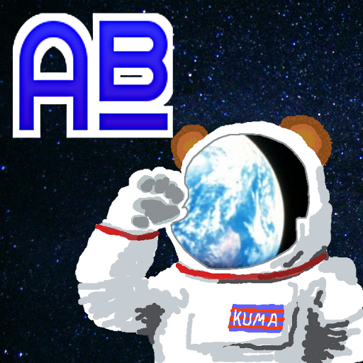

Firefox OS向けに作ったアプリですが中身はウェブの技術なので、マニフェストの変更だけでブラウザゲームにコンバートできました。
宇宙グマを操作して、隕石をよけながら画面上部のISSまで導いてください。 画面の中心より左をタップすると左へ、右をタップすると右へ移動します。
カジュアルなゲーム？なので終わりはないですが、一応の節目として36面に宇宙の真理、曼荼羅が出現します。 （以降36面毎に出現します）
なお、スワイプ操作はありません。
時は西暦21XX年、宇宙世紀の開拓時代は今、最盛期を迎えようとしていた。 人類は、新たなパートナーである熊たちとともに、この時代を力強く生き抜いていた。
元来の人懐っこさと屈強な肉体、そして器用な前足を持つ熊たちは、重力から解き放たれたことによって脳容積が拡大し、大幅に知能を向上させた。 そして、22世紀初頭に獲得した積極的冬眠制御ホルモンが、彼らを人類の最良のパートナーに押し上げたと言っても過言ではないだろう。 極限状態での冬眠制御は、彼らの生命維持に大きなアドバンテージを与え、船外活動での生存率は人間を上回るまでになった。
これは、のちに「熊たちの時代」と呼ばれる宇宙世紀元年の熊たちの活躍を描いた物語である。
Astro Bear はJavaScriptで開発しています。 PCやスマートフォンのブラウザで遊べます。
TODO: PWA対応していますので、ホームに追加してオフラインで遊ぶこともできます。